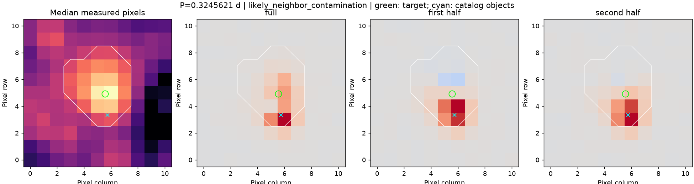

contamination-294052132
已有真实开发对照，不是新的独立测试。
v4 选定周期：None 天；周期对照：abstained。
来源去向：不将这个周期信号归属目标；来源状态：likely_neighbor_contamination。
来源图使用旧数据中保留的候选周期 0.32456212624806263 天，仅作诊断，没有提升 v4 的周期结论。
周期搜索与光变图 · 完整来源依据 · 可复现的来源输入
时段 7
SAP 辅助通道
- SAP_BKG：no_strong_correlation；相关系数 0.19367958311006236；周期改善 -0.06072642710232157。
- POS_CORR1：no_strong_correlation；相关系数 -0.10247734457455987；周期改善 -0.015095056099914794。
- POS_CORR2：no_strong_correlation；相关系数 -0.3459699937132552；周期改善 -0.018406123161788912。
- MOM_CENTR1：no_strong_correlation；相关系数 -0.06518755731216705；周期改善 -0.0053618473164198655。
- MOM_CENTR2：no_strong_correlation；相关系数 -0.3081080258934176；周期改善 -0.013306770181426453。
PDCSAP 辅助通道
- SAP_BKG：no_strong_correlation；相关系数 0.09297705860543516；周期改善 -0.06072642710232157。
- POS_CORR1：no_strong_correlation；相关系数 0.016514788062544652；周期改善 -0.015095056099914794。
- POS_CORR2：no_strong_correlation；相关系数 -0.022736319227076068；周期改善 -0.018406123161788912。
- MOM_CENTR1：no_strong_correlation；相关系数 0.1025924693541148；周期改善 -0.0053618473164198655。
- MOM_CENTR2：no_strong_correlation；相关系数 0.027500530017131854；周期改善 -0.013306770181426453。
时段 35
SAP 辅助通道
- SAP_BKG：no_strong_correlation；相关系数 0.14963091928949582；周期改善 -0.05562800927638589。
- POS_CORR1：no_strong_correlation；相关系数 -0.9460562064243592；周期改善 -0.023817731319570656。
- POS_CORR2：no_strong_correlation；相关系数 -0.943789488964572；周期改善 -0.02625580002125716。
- MOM_CENTR1：no_strong_correlation；相关系数 -0.9438684880770738；周期改善 -0.022786690260086617。
- MOM_CENTR2：no_strong_correlation；相关系数 -0.942032472478489；周期改善 -0.0269625670482323。
PDCSAP 辅助通道
- SAP_BKG：no_strong_correlation；相关系数 0.02000254165008226；周期改善 -0.05562800927638589。
- POS_CORR1：no_strong_correlation；相关系数 0.046779452597739336；周期改善 -0.023817731319570656。
- POS_CORR2：no_strong_correlation；相关系数 0.053951313566078296；周期改善 -0.02625580002125716。
- MOM_CENTR1：no_strong_correlation；相关系数 0.04506745584235384；周期改善 -0.022786690260086617。
- MOM_CENTR2：no_strong_correlation；相关系数 0.05878909874239218；周期改善 -0.0269625670482323。
时段 96
SAP 辅助通道
- SAP_BKG：no_strong_correlation；相关系数 0.26432225565660855；周期改善 -0.01319536431439916。
- POS_CORR1：no_strong_correlation；相关系数 0.398874825947064；周期改善 -0.012339382326852943。
- POS_CORR2：no_strong_correlation；相关系数 -0.05821602500435961；周期改善 -0.014159736940208223。
- MOM_CENTR1：no_strong_correlation；相关系数 0.4285004420184301；周期改善 -0.012209248278256535。
- MOM_CENTR2：no_strong_correlation；相关系数 -0.0817417456330447；周期改善 -0.014188843737611867。
PDCSAP 辅助通道
- SAP_BKG：no_strong_correlation；相关系数 -0.09923658550675829；周期改善 -0.01319536431439916。
- POS_CORR1：no_strong_correlation；相关系数 0.011226451041518771；周期改善 -0.012339382326852943。
- POS_CORR2：no_strong_correlation；相关系数 -0.0363206161740561；周期改善 -0.014159736940208223。
- MOM_CENTR1：no_strong_correlation；相关系数 0.024540397644889668；周期改善 -0.012209248278256535。
- MOM_CENTR2：no_strong_correlation；相关系数 -0.05535174901882092；周期改善 -0.014188843737611867。
像素结论：likely_neighbor_contamination。

绿色圈是目标位置；青色叉是输入目录对象；白线是原测光区域。颜色表示与光变同相的周期变化，位置判断不是精密光斑拟合。